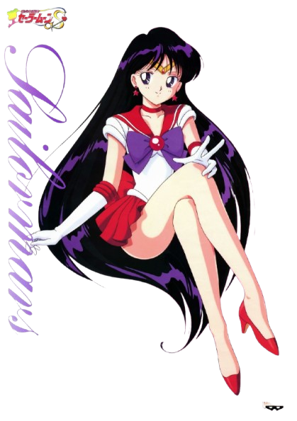
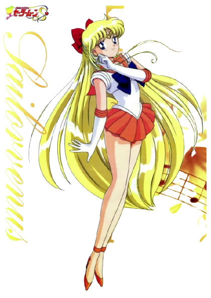
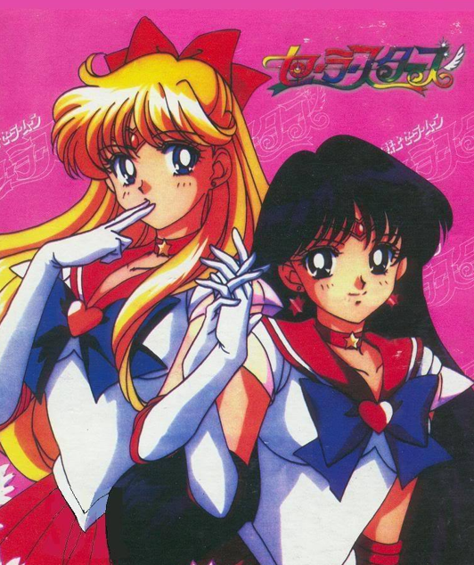

🌙 Day 1: 天神商圈與日系百貨
🚇 地鐵空港線
☿ Day 2: 博多核心與巨型鋼彈
🚶 步行 / JR / 地鐵七隈線
早上 10:00：BAO BAO 排隊行程
先前往 BAO BAO ISSEY MIYAKE 岩田屋福岡店 排隊購買。
早上 - 中午：博多車站大攻略
• 服飾購物：AMU EST (含 @cosme store)
• 雜貨選物：Hands (Tokyu Hands) 博多店
• 伴手禮天堂：マイング (Maing)
• 藥妝：松本清 (筑紫口店)

♃ Day 3: 藝文之旅與復盤
🚇 地鐵空港線
下午：博多 & 天神再次復盤
回到商圈針對想加強衝刺的店鋪進行深度復盤與最後採買。
傍晚：博多頂樓夜景
前往 AMU PLAZA博多頂樓 (燕子之林廣場)。參拜鐵道神社、搭乘燕子號小火車，並在展望台觀賞博多市區夜景。
晚上：迴轉壽司ひょうたん
品嚐名店 葫蘆壽司 (ひょうたん)。

💖 Day 4: 返程衝刺
🚇 地鐵空港線
福岡機場國際航廈
搭地鐵直達福岡機場站。在免稅店進行最後採買後回國！
